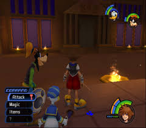
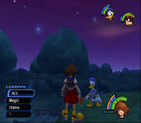
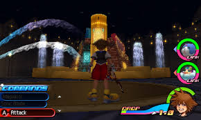
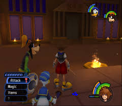
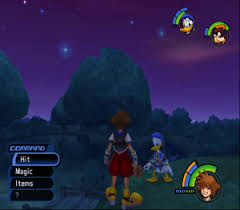
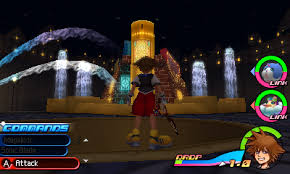
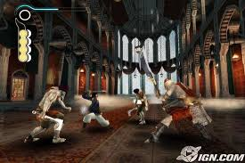
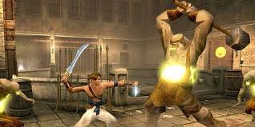
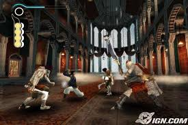
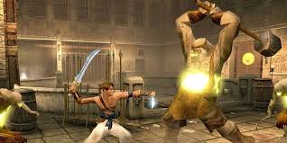

GustaGames
Uma aventura silenciosa e majestosa, onde você enfrenta colossos gigantescos em um mundo vasto e desolado. Cada batalha é um quebra-cabeça épico e cada vitória, uma sensação de conquista quase mística. Se você gosta de desafios e cenários de tirar o fôlego, este jogo é obrigatório.
Mistura mágica de Disney e Final Fantasy, onde você explora mundos encantados ao lado de Sora e seus amigos. Com combate ágil, história envolvente e personagens inesquecíveis, é impossível não se perder nas aventuras cheias de emoção e nostalgia.
 





Uma aventura cheia de acrobacias, puzzles e ação frenética. Você controla o Príncipe, manipulando o tempo para evitar armadilhas mortais e derrotar inimigos. A sensação de correr pelas paredes e reverter o tempo é simplesmente viciante.
 



Uma experiência poética de aventura e exploração, onde você guia um garoto preso em um castelo misterioso. Cada passo exige cuidado, cada sombra esconde segredos, e a história minimalista cria uma ligação emocional rara nos jogos. Imperdível para quem quer mais do que ação, mas uma aventura que toca o coração.
Um clássico RPG-aventura com gráficos impressionantes para o PS2, história envolvente e um mundo vibrante cheio de mistérios. Você acompanha Tidus e Yuna em uma jornada épica, lutando contra monstros e descobrindo segredos de Spira. Ideal para quem ama história profunda, combates estratégicos e exploração.